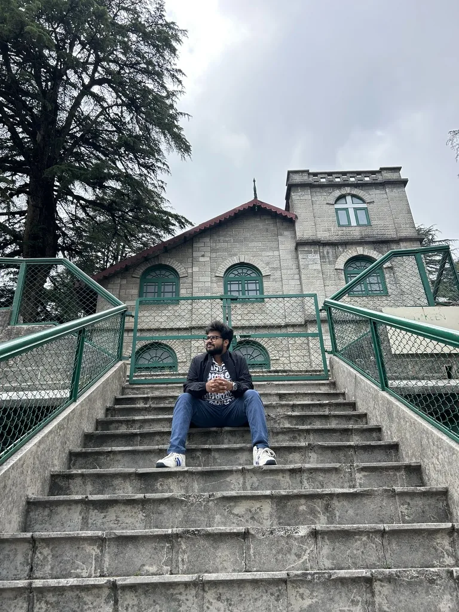
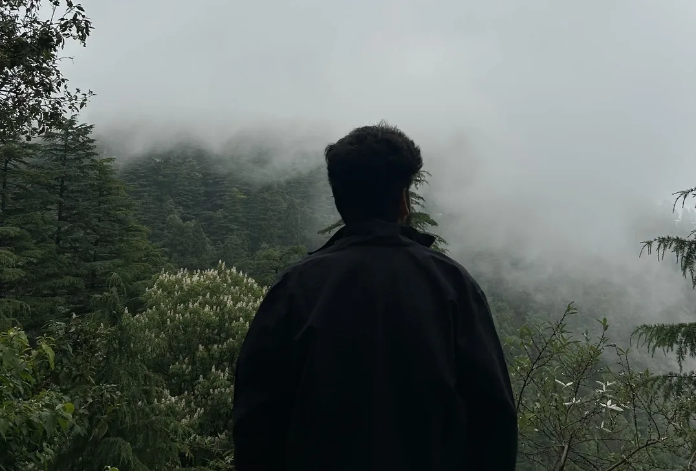
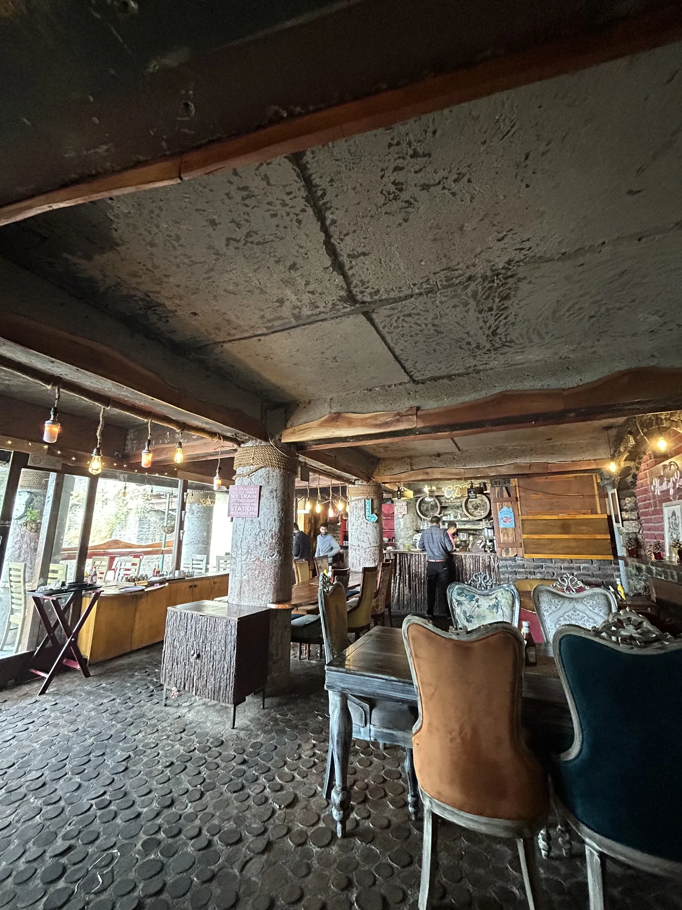
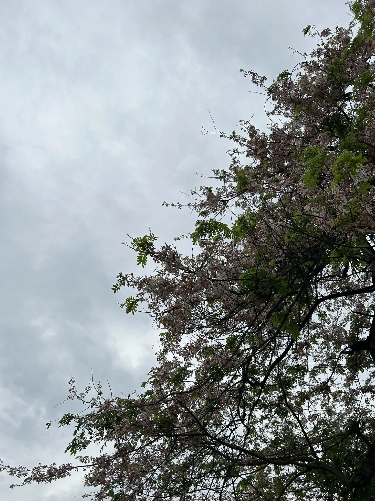

For as long as I can remember, the debate between mountains and beaches has never really had a winner. Everyone seems to have a side. Personally, I've never been able to choose — both have their own kind of magic. But there is something about the mountains that is difficult to explain. They have a strange way of changing you. You arrive carrying the noise of everyday life, and somehow, without realizing it, you leave carrying a little more silence within yourself. Over the years, I've found myself returning to the hills time and again — Shimla, Manali, Kullu, Kodaikanal, Rishikesh, Mussoorie — every place has left behind memories that refuse to fade. Yet the mountains never feel repetitive. Every visit feels like meeting an old friend who somehow has a new story to tell.
So when my friends suggested another trip to Mussoorie and Landour in June 2025, the answer was obvious — some invitations are simply too good to refuse. Before heading to Dehradun, two of us made a small detour to Haridwar. We walked to the ghats and took a holy dip in the Ganga. The first touch of the water was enough to send a shiver through my body; it was unbelievably cold. What amazed me even more was the thought that the river had already travelled hundreds of kilometres from its Himalayan source, yet it still carried that icy freshness. Standing in the current, surrounded by pilgrims from every corner of the country, I realized that Haridwar is much more than a destination. It is an emotion carried forward by generations. Whether one is deeply religious or not, it is impossible to ignore the faith that fills the air. From there, our journey truly began in Dehradun—the quiet gateway to the Himalayas.
Our first stop was Kuchu Pani, a natural stream cave where freezing water flowed through narrow rocky passages. We spent a couple of hours walking through the stream, clicking photographs and escaping the June heat. Curiously, those two hours felt unusually long, as though time itself had slowed down. Later that day, we visited the Forest Research Institute (FRI), one of Dehradun's most iconic landmarks. Like many people, I associated it with Student of the Year, parts of which were filmed there, and I expected a glamorous campus buzzing with activity. Reality was far more beautiful. Instead of a busy college, we found ourselves wandering through a peaceful estate lined with towering trees from species we had never seen before. The air carried the faint fragrance of camphor from the many camphor trees scattered across the campus, while birdsong replaced the usual city noise. The institute houses several museums, but one, in particular, stayed with us—the Museum of the Life of Trees. At its centre stood the cross-section of an ancient tree trunk. Hundreds of growth rings spread out from its core, each one representing another year the tree had lived. Labels marked different periods of its life. By the time it had fallen, the tree had witnessed nearly nine centuries of history. Standing before it was strangely humbling.

We looked at those hundreds of rings and then thought about our own lives—barely twenty-five years long. Compared to the silent life of that tree, our existence felt incredibly small. It reminded us that while we often measure life through deadlines, promotions and achievements, nature measures it differently—through seasons, patience and time. Perhaps that is why five hours disappeared inside FRI without any of us noticing. We wandered through its museums, shaded walkways and gardens, completely losing track of time. Ironically, the two hours at Kuchu Pani had felt longer than the entire afternoon at FRI.
The next morning, we finally drove up towards Mussoorie. We stayed near Mall Road, the busiest part of the town, and during the afternoon it felt like any other popular hill station—shops filled with tourists, cafés serving steaming cups of coffee, and streets buzzing with people. For a moment, I wondered if this visit would be any different from the others. Then evening arrived. Clouds slowly rolled over the hills, swallowing roads, buildings and entire valleys within minutes. Visibility dropped to barely a hundred metres. The distant lights disappeared into the mist, and suddenly, the town became quiet. There were no blaring horns, no overwhelming traffic, no constant rush — it felt as though we had stepped into another world, hidden behind a curtain of clouds. Perhaps that is what mountains do best: they don't just offer breathtaking views—they gently silence everything that doesn't deserve your attention.



The following day, we headed to Landour and Lal Tibba, among the highest points around Mussoorie. A light drizzle welcomed us throughout the climb, making the roads glisten and filling the air with the earthy scent of rain. On our way to the famous Landour Bakehouse, we passed Ruskin Bond's home. One of my friends smiled and said, "Now it makes complete sense why he chose to spend his life here." He was absolutely right. There was something different about Landour. Nobody seemed to be in a hurry. People weren't rushing from one attraction to another — they simply sat on benches, walked through quiet lanes, admired the valleys and enjoyed the silence. It almost felt like the town encouraged creativity: when the noise around you disappears, your own thoughts finally become audible. We spent hours wandering those peaceful roads before beginning our journey back home early the next morning.
Somewhere around five-thirty, as our car descended through the winding mountain roads, the Himalayas offered us one final gift. The sun had only just begun to rise. It wasn't fully visible yet, but the sky had already transformed into brilliant shades of orange and gold, and the mountains stood like dark silhouettes against the glowing horizon while the valleys slowly woke beneath the morning light. I sat quietly by the window with soft music playing through my earphones. For the first time in what felt like years, my mind wasn't racing. The pressure to achieve more, the endless deadlines, the constant feeling of needing to be somewhere else—all of it seemed to fade with the morning mist. The mountains hadn't solved my problems. They had simply reminded me that life isn't meant to be lived at full speed every single day. Sometimes, the most meaningful thing you can do is pause — watch a sunrise, breathe in cold mountain air, sit in silence, and remember that the world existed long before us and will continue long after us.
As the first rays of sunlight touched the hills, one thought stayed with me: if moments like these aren't what we're living for, then what exactly is the point of all the rush? Maybe that's why people keep returning to the mountains — not because they're escaping life, but because, every once in a while, the mountains quietly remind them how to live it.